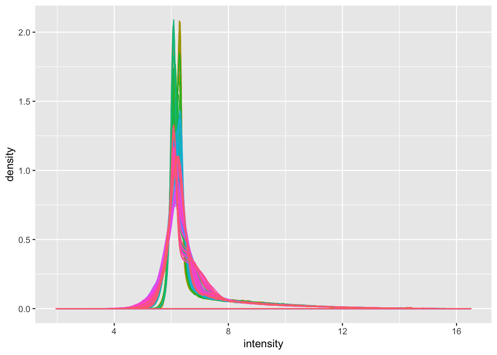
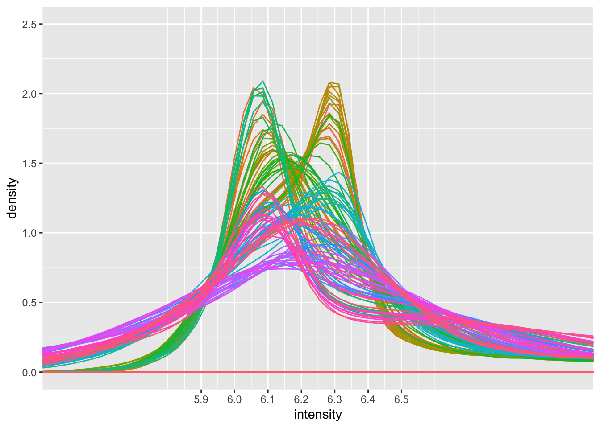
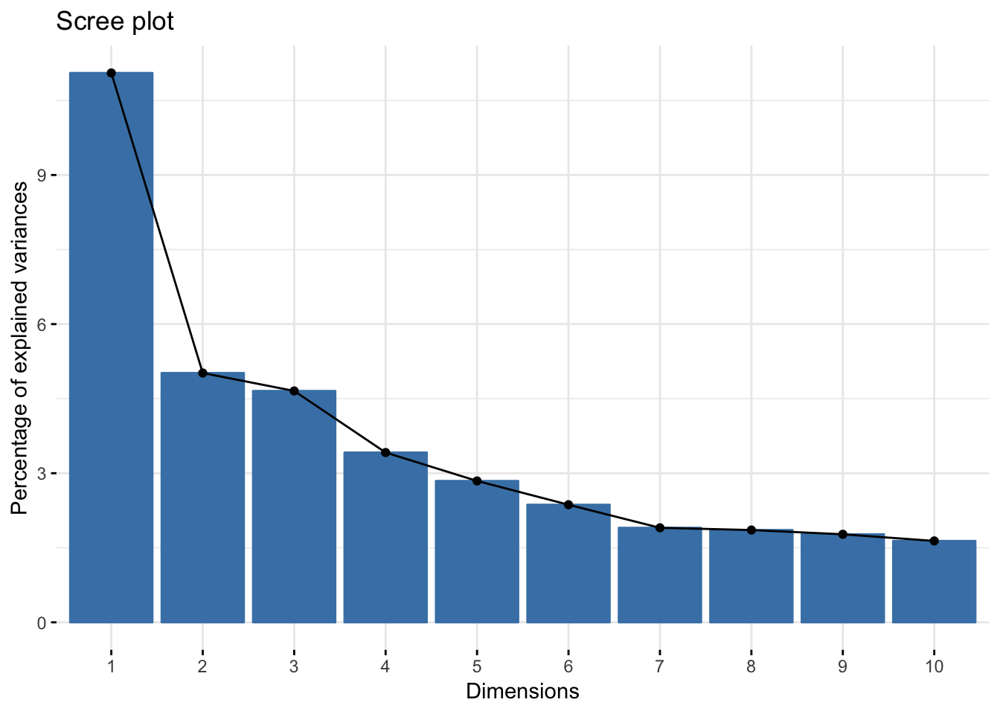
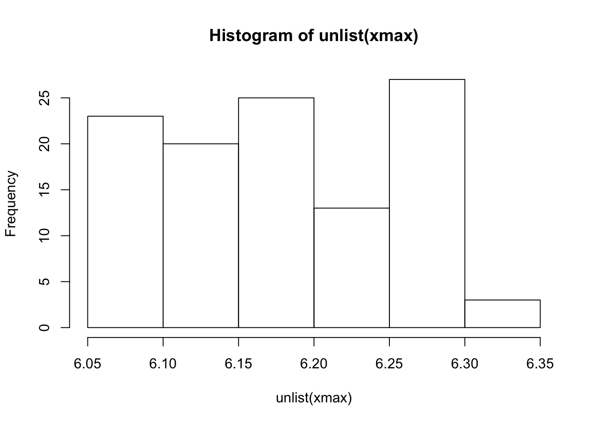
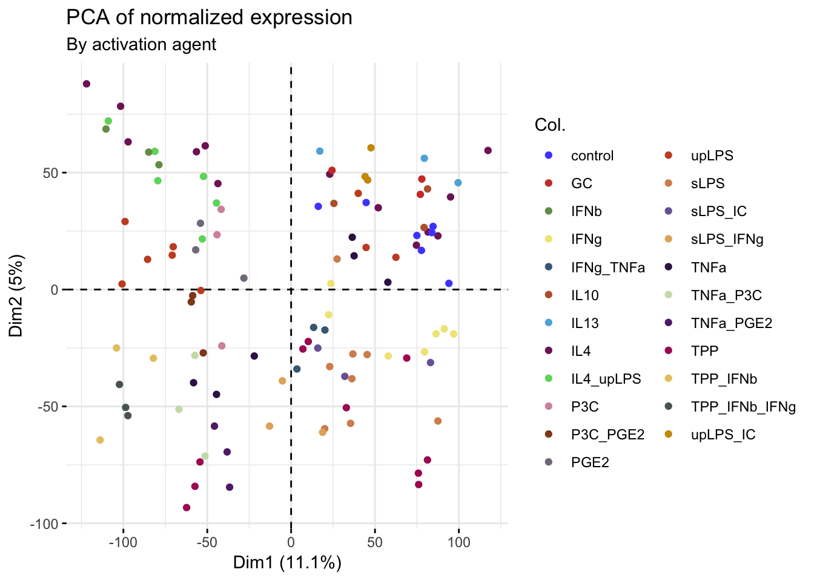
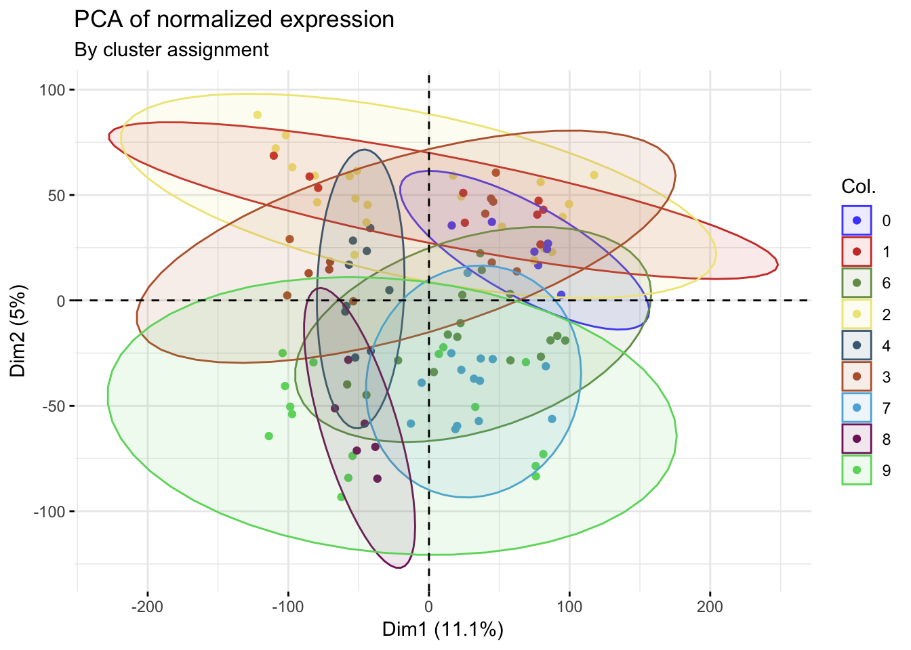
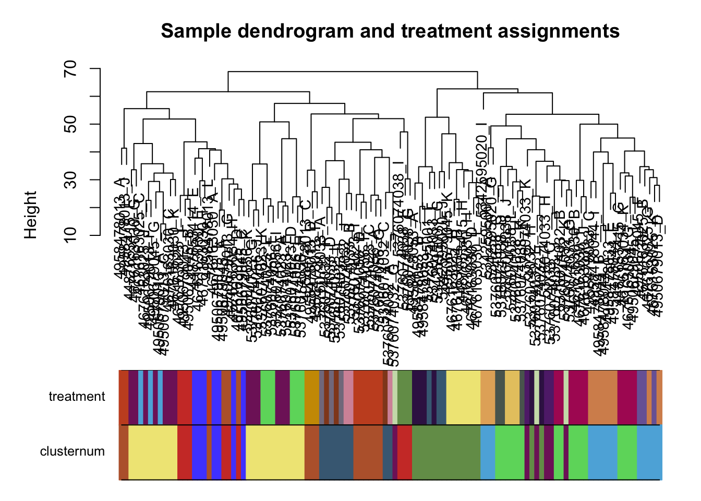

Last updated: 2019-06-03
Checks: 6 0
Knit directory: tcga_macs/
This reproducible R Markdown analysis was created with workflowr (version 1.3.0). The Checks tab describes the reproducibility checks that were applied when the results were created. The Past versions tab lists the development history.
Great! Since the R Markdown file has been committed to the Git repository, you know the exact version of the code that produced these results.
Great job! The global environment was empty. Objects defined in the global environment can affect the analysis in your R Markdown file in unknown ways. For reproduciblity it’s best to always run the code in an empty environment.
The command set.seed(20190409) was run prior to running the code in the R Markdown file. Setting a seed ensures that any results that rely on randomness, e.g. subsampling or permutations, are reproducible.
Great job! Recording the operating system, R version, and package versions is critical for reproducibility.
Nice! There were no cached chunks for this analysis, so you can be confident that you successfully produced the results during this run.
Great! You are using Git for version control. Tracking code development and connecting the code version to the results is critical for reproducibility. The version displayed above was the version of the Git repository at the time these results were generated.
Note that you need to be careful to ensure that all relevant files for the analysis have been committed to Git prior to generating the results (you can use wflow_publish or wflow_git_commit). workflowr only checks the R Markdown file, but you know if there are other scripts or data files that it depends on. Below is the status of the Git repository when the results were generated:
Ignored files:
Ignored: .DS_Store
Ignored: .Rhistory
Ignored: .Rproj.user/
Ignored: analysis/.DS_Store
Ignored: data/.DS_Store
Ignored: data/GSE46903_Affymetrix_Reanalyzed_data.txt.gz
Ignored: data/GSE46903_Affymetrix_metadata.txt.gz
Ignored: data/GSE46903_RAW.tar
Ignored: data/GSE46903_non-normalized.txt
Ignored: data/GSE46903_nonnormalized copy.tsv
Ignored: data/gse_46903.rds
Ignored: output/dge_frame.csv
Ignored: output/expression_set.rds
Ignored: output/normalized_probe_intensities.Rds
Ignored: output/processed_lumi_46903.Rds
Ignored: output/processed_lumi_46903.tsv
Ignored: output/processed_lumi_exprs.txt
Untracked files:
Untracked: docs/figure/invitro_mac_dge.Rmd/
Unstaged changes:
Modified: analysis/invitro_mac_dge.Rmd
Note that any generated files, e.g. HTML, png, CSS, etc., are not included in this status report because it is ok for generated content to have uncommitted changes.
These are the previous versions of the R Markdown and HTML files. If you’ve configured a remote Git repository (see ?wflow_git_remote), click on the hyperlinks in the table below to view them.
| File | Version | Author | Date | Message |
|---|---|---|---|---|
| Rmd | c22f4ad | mleukam | 2019-06-03 | wflow_publish(“analysis/preprocessing.Rmd”) |
| html | eeb1301 | mleukam | 2019-05-08 | Build site. |
| Rmd | 3ff66a4 | mleukam | 2019-05-08 | rename and update preprocessing notebook, update index links |
| Rmd | 8871959 | mleukam | 2019-04-17 | rename preprocessing notebook |
| html | 8871959 | mleukam | 2019-04-17 | rename preprocessing notebook |
The pupose of this analysis is to find ranked differential gene expression sets for each of a number of experimentally derived macrophage states compared to monocytes. These gene sets will be used for our downstream analyses.
We are roughly following the methods described in:
Gubin, Matthew M., Ekaterina Esaulova, Jeffrey P. Ward, Olga N. Malkova, Daniele Runci, Pamela Wong, Takuro Noguchi, et al. 2018. “High-Dimensional Analysis Delineates Myeloid and Lymphoid Compartment Remodeling during Successful Immune-Checkpoint Cancer Therapy.” Cell 175 (4): 1014–30.e19.
For more details regarding the data source and experimental design, please refer to the data_download notebook.
Clear workspace prior to analysis and load necessary packages
rm(list = ls())library("sva")
library("tidyverse")
library("limma")
library("lumi")
library("lumiHumanIDMapping")
library("lumiHumanAll.db")
library("annotate")
library("factoextra")
library("FactoMineR")
library("ggsci")
library("ggpubr")
library("WGCNA")raw_input <- read_delim("~/tcga_macs/data/GSE46903_non-normalized.txt", delim = "\t")Parsed with column specification:
cols(
.default = col_double()
)See spec(...) for full column specifications.One source for methods (start on page 23): https://bioconductor.org/packages/release/data/experiment/vignettes/BeadArrayUseCases/inst/doc/BeadArrayUseCases.pdf
NB: “We recommend users work with the non-normalized probe-specific data in their analysis where possible. Illumina’s background correction step, which subtracts the intensities of the negative control probes from the intensities of the regular probes, should also be avoided.”
# read in data using limma function for illumina beadchips
lumi_input <- lumiR("~/tcga_macs/data/GSE46903_non-normalized.txt",
sep = "\t",
lib.mapping = 'lumiHumanIDMapping',
parseColumnName = TRUE,
columnNameGrepPattern = list(
exprs = 'AVG_Signal',
se.exprs = 'BEAD_STD',
detection = 'Detection',
beadNum = 'Avg_NBEADS')) Duplicated IDs found and were merged!# review results
dim(lumi_input)Features Samples
47462 384 lumi_input$E[1:5, 1:5]NULLCitation for superiority of log2 rsn normalization for this specific beadchip: https://bmcgenomics.biomedcentral.com/articles/10.1186/1471-2164-11-349
lumi_46903 <- lumiExpresso(lumi_input,
normalize.param = list(method = 'rsn'))
saveRDS(lumi_46903, "~/tcga_macs/output/normalized_probe_intensities.Rds")# review metadata
show(lumi_46903)ExpressionSet (storageMode: lockedEnvironment)
assayData: 47462 features, 384 samples
element names: detection, exprs
protocolData: none
phenoData
sampleNames: 4233291007_A 4233291007_B ... 5376074056_L (384
total)
varLabels: sampleID
varMetadata: labelDescription
featureData
featureNames: Ku8QhfS0n_hIOABXuE fqPEquJRRlSVSfL.8A ...
N8t5EuJCr0Tk9.zHno (47462 total)
fvarLabels: ProbeID
fvarMetadata: labelDescription
experimentData: use 'experimentData(object)'
Annotation: lumiHumanAll.db raw_metadata <- pData(phenoData(lumi_46903))
head(raw_metadata) sampleID
4233291007_A 4233291007_A
4233291007_B 4233291007_B
4233291007_C 4233291007_C
4233291007_D 4233291007_D
4233291007_E 4233291007_E
4233291007_F 4233291007_FThe raw data is labeled with sample names (a 10-digit number followed by underscore and a letter), not the GEO accession number, whereas the sample names in the processed data GSE ExpressionSet object are GEO accession numbers.
I will go back to the published pre-processed GSE in the GEO and see if the metadata there can be merged into an expression set with the expression matrix I generated from the raw values.
# read in previously downloaded GSE containing pre-normalized reads and full metadata
gse46903 <- readRDS("~/tcga_macs/data/gse_46903.rds")
show(pData(phenoData(gse46903[[1]]))[1:20,c(1,6,8)]) title type source_name_ch1
GSM1140407 B cell [5342595013_G] RNA peripheral blood
GSM1140408 B cell [5342595013_I] RNA peripheral blood
GSM1140409 B cell [5342595027_I] RNA peripheral blood
GSM1140410 DC_reg [5342595013_D] RNA peripheral blood
GSM1140411 DC_imm [5342595013_E] RNA peripheral blood
GSM1140412 DC_mat [5342595013_H] RNA peripheral blood
GSM1140413 DC_mat [5342595013_L] RNA peripheral blood
GSM1140414 DC_imm [5342595027_A] RNA peripheral blood
GSM1140415 DC_mat [5342595027_D] RNA peripheral blood
GSM1140416 DC_reg [5342595027_E] RNA peripheral blood
GSM1140417 DC_imm [5342595027_H] RNA peripheral blood
GSM1140418 DC_reg [5342595027_J] RNA peripheral blood
GSM1140419 DC_imm [5376074046_A] RNA peripheral blood
GSM1140420 DC_upLPS_10_24h [5376074046_B] RNA peripheral blood
GSM1140421 DC_upLPS_10_24h [5376074046_C] RNA peripheral blood
GSM1140422 DC_upLPS_10_24h [5376074046_D] RNA peripheral blood
GSM1140423 DC_upLPS_10_24h [5376074046_E] RNA peripheral blood
GSM1140424 DC_imm [5376074046_F] RNA peripheral blood
GSM1140425 DC_imm [5376074046_G] RNA peripheral blood
GSM1140426 DC_upLPS_10_24h [5376074046_H] RNA peripheral bloodThe sample names correspond to experimental conditions where the 10-digit number is the chip and the letter is the lane, forming a unique identifier for each sample. These are stuck in the same column as the description of the experiment.
# pull phenoData from expression set as an AnnotatedDataFrame
meta46903 <- phenoData(gse46903[[1]])
# get data and annotations separately from AnnotatedDataFrame
meta_data46903 <- pData(meta46903)
anno_data46903 <- varMetadata(meta46903)
# review metadata
class(meta_data46903)[1] "data.frame"str(meta_data46903)'data.frame': 384 obs. of 38 variables:
$ title : Factor w/ 384 levels "B cell [5342595013_G]",..: 1 2 3 22 4 19 20 5 21 23 ...
$ geo_accession : chr "GSM1140407" "GSM1140408" "GSM1140409" "GSM1140410" ...
$ status : Factor w/ 1 level "Public on Feb 13 2014": 1 1 1 1 1 1 1 1 1 1 ...
$ submission_date : Factor w/ 1 level "May 14 2013": 1 1 1 1 1 1 1 1 1 1 ...
$ last_update_date : Factor w/ 3 levels "Feb 13 2014",..: 1 1 1 1 1 1 1 1 1 1 ...
$ type : Factor w/ 1 level "RNA": 1 1 1 1 1 1 1 1 1 1 ...
$ channel_count : Factor w/ 1 level "1": 1 1 1 1 1 1 1 1 1 1 ...
$ source_name_ch1 : Factor w/ 1 level "peripheral blood": 1 1 1 1 1 1 1 1 1 1 ...
$ organism_ch1 : Factor w/ 1 level "Homo sapiens": 1 1 1 1 1 1 1 1 1 1 ...
$ characteristics_ch1 : Factor w/ 13 levels "initial differentiation: -",..: 1 1 1 9 9 9 9 9 9 9 ...
$ characteristics_ch1.1 : Factor w/ 41 levels "activation stimuli: CD3/28",..: 39 39 39 34 21 33 33 21 33 34 ...
$ characteristics_ch1.2 : Factor w/ 12 levels "time: 0h","time: 12h",..: 1 1 1 11 1 11 11 1 11 11 ...
$ characteristics_ch1.3 : Factor w/ 73 levels "donor: BC 65",..: 56 68 67 71 70 69 70 71 71 70 ...
$ molecule_ch1 : Factor w/ 1 level "total RNA": 1 1 1 1 1 1 1 1 1 1 ...
$ extract_protocol_ch1 : Factor w/ 1 level "RNA was extracted with Trizol reagent, followed by clean-up and DNase I treatment with QIAGEN RNeasy mini kit i"| __truncated__: 1 1 1 1 1 1 1 1 1 1 ...
$ label_ch1 : Factor w/ 1 level "biotin": 1 1 1 1 1 1 1 1 1 1 ...
$ label_protocol_ch1 : Factor w/ 1 level "Biotinylated cRNA were prepared with the Ambion MessageAmp kit for Illumina arrays": 1 1 1 1 1 1 1 1 1 1 ...
$ taxid_ch1 : Factor w/ 1 level "9606": 1 1 1 1 1 1 1 1 1 1 ...
$ hyb_protocol : Factor w/ 1 level "Standard Illumina hybridization protocol": 1 1 1 1 1 1 1 1 1 1 ...
$ scan_protocol : Factor w/ 1 level "Standard Illumina scanning protocol": 1 1 1 1 1 1 1 1 1 1 ...
$ description : Factor w/ 6 levels "B cell","Dendritic cell",..: 1 1 1 2 2 2 2 2 2 2 ...
$ data_processing : Factor w/ 1 level "The data were log2-transformed and normalized using quantile normalization with Partek Genomics Suite": 1 1 1 1 1 1 1 1 1 1 ...
$ platform_id : Factor w/ 1 level "GPL6947": 1 1 1 1 1 1 1 1 1 1 ...
$ contact_name : Factor w/ 1 level "Joachim,,Schultze": 1 1 1 1 1 1 1 1 1 1 ...
$ contact_email : Factor w/ 1 level "j.schultze@uni-bonn.de": 1 1 1 1 1 1 1 1 1 1 ...
$ contact_department : Factor w/ 1 level "Genomics and Immunoregulation": 1 1 1 1 1 1 1 1 1 1 ...
$ contact_institute : Factor w/ 1 level "LIMES (Life and Medical Sciences Center Genomics and Immunoregulation)": 1 1 1 1 1 1 1 1 1 1 ...
$ contact_address : Factor w/ 1 level "Carl-Troll-Strasse 31": 1 1 1 1 1 1 1 1 1 1 ...
$ contact_city : Factor w/ 1 level "Bonn": 1 1 1 1 1 1 1 1 1 1 ...
$ contact_state : Factor w/ 1 level "NRW": 1 1 1 1 1 1 1 1 1 1 ...
$ contact_zip/postal_code : Factor w/ 1 level "53115": 1 1 1 1 1 1 1 1 1 1 ...
$ contact_country : Factor w/ 1 level "Germany": 1 1 1 1 1 1 1 1 1 1 ...
$ supplementary_file : Factor w/ 1 level "NONE": 1 1 1 1 1 1 1 1 1 1 ...
$ data_row_count : Factor w/ 1 level "47463": 1 1 1 1 1 1 1 1 1 1 ...
$ activation stimuli:ch1 : chr "unstimulated" "unstimulated" "unstimulated" "TNFa 800 u/ml+ PGE2 1µg/ml+ P3C 1µg/ml" ...
$ donor:ch1 : chr "D1" "D4" "D3" "D7" ...
$ initial differentiation:ch1: chr "-" "-" "-" "GM-CSF + IL4" ...
$ time:ch1 : chr "0h" "0h" "0h" "72h" ...head(meta_data46903) title geo_accession status
GSM1140407 B cell [5342595013_G] GSM1140407 Public on Feb 13 2014
GSM1140408 B cell [5342595013_I] GSM1140408 Public on Feb 13 2014
GSM1140409 B cell [5342595027_I] GSM1140409 Public on Feb 13 2014
GSM1140410 DC_reg [5342595013_D] GSM1140410 Public on Feb 13 2014
GSM1140411 DC_imm [5342595013_E] GSM1140411 Public on Feb 13 2014
GSM1140412 DC_mat [5342595013_H] GSM1140412 Public on Feb 13 2014
submission_date last_update_date type channel_count
GSM1140407 May 14 2013 Feb 13 2014 RNA 1
GSM1140408 May 14 2013 Feb 13 2014 RNA 1
GSM1140409 May 14 2013 Feb 13 2014 RNA 1
GSM1140410 May 14 2013 Feb 13 2014 RNA 1
GSM1140411 May 14 2013 Feb 13 2014 RNA 1
GSM1140412 May 14 2013 Feb 13 2014 RNA 1
source_name_ch1 organism_ch1
GSM1140407 peripheral blood Homo sapiens
GSM1140408 peripheral blood Homo sapiens
GSM1140409 peripheral blood Homo sapiens
GSM1140410 peripheral blood Homo sapiens
GSM1140411 peripheral blood Homo sapiens
GSM1140412 peripheral blood Homo sapiens
characteristics_ch1
GSM1140407 initial differentiation: -
GSM1140408 initial differentiation: -
GSM1140409 initial differentiation: -
GSM1140410 initial differentiation: GM-CSF + IL4
GSM1140411 initial differentiation: GM-CSF + IL4
GSM1140412 initial differentiation: GM-CSF + IL4
characteristics_ch1.1
GSM1140407 activation stimuli: unstimulated
GSM1140408 activation stimuli: unstimulated
GSM1140409 activation stimuli: unstimulated
GSM1140410 activation stimuli: TNFa 800 u/ml+ PGE2 1µg/ml+ P3C 1µg/ml
GSM1140411 activation stimuli: none
GSM1140412 activation stimuli: TNFa 800 u/ml
characteristics_ch1.2 characteristics_ch1.3 molecule_ch1
GSM1140407 time: 0h donor: D1 total RNA
GSM1140408 time: 0h donor: D4 total RNA
GSM1140409 time: 0h donor: D3 total RNA
GSM1140410 time: 72h donor: D7 total RNA
GSM1140411 time: 0h donor: D6 total RNA
GSM1140412 time: 72h donor: D5 total RNA
extract_protocol_ch1
GSM1140407 RNA was extracted with Trizol reagent, followed by clean-up and DNase I treatment with QIAGEN RNeasy mini kit in accordance with the prescribed protocol provided with the kit. Quality control was performed with Agilent Bioanalyser.
GSM1140408 RNA was extracted with Trizol reagent, followed by clean-up and DNase I treatment with QIAGEN RNeasy mini kit in accordance with the prescribed protocol provided with the kit. Quality control was performed with Agilent Bioanalyser.
GSM1140409 RNA was extracted with Trizol reagent, followed by clean-up and DNase I treatment with QIAGEN RNeasy mini kit in accordance with the prescribed protocol provided with the kit. Quality control was performed with Agilent Bioanalyser.
GSM1140410 RNA was extracted with Trizol reagent, followed by clean-up and DNase I treatment with QIAGEN RNeasy mini kit in accordance with the prescribed protocol provided with the kit. Quality control was performed with Agilent Bioanalyser.
GSM1140411 RNA was extracted with Trizol reagent, followed by clean-up and DNase I treatment with QIAGEN RNeasy mini kit in accordance with the prescribed protocol provided with the kit. Quality control was performed with Agilent Bioanalyser.
GSM1140412 RNA was extracted with Trizol reagent, followed by clean-up and DNase I treatment with QIAGEN RNeasy mini kit in accordance with the prescribed protocol provided with the kit. Quality control was performed with Agilent Bioanalyser.
label_ch1
GSM1140407 biotin
GSM1140408 biotin
GSM1140409 biotin
GSM1140410 biotin
GSM1140411 biotin
GSM1140412 biotin
label_protocol_ch1
GSM1140407 Biotinylated cRNA were prepared with the Ambion MessageAmp kit for Illumina arrays
GSM1140408 Biotinylated cRNA were prepared with the Ambion MessageAmp kit for Illumina arrays
GSM1140409 Biotinylated cRNA were prepared with the Ambion MessageAmp kit for Illumina arrays
GSM1140410 Biotinylated cRNA were prepared with the Ambion MessageAmp kit for Illumina arrays
GSM1140411 Biotinylated cRNA were prepared with the Ambion MessageAmp kit for Illumina arrays
GSM1140412 Biotinylated cRNA were prepared with the Ambion MessageAmp kit for Illumina arrays
taxid_ch1 hyb_protocol
GSM1140407 9606 Standard Illumina hybridization protocol
GSM1140408 9606 Standard Illumina hybridization protocol
GSM1140409 9606 Standard Illumina hybridization protocol
GSM1140410 9606 Standard Illumina hybridization protocol
GSM1140411 9606 Standard Illumina hybridization protocol
GSM1140412 9606 Standard Illumina hybridization protocol
scan_protocol description
GSM1140407 Standard Illumina scanning protocol B cell
GSM1140408 Standard Illumina scanning protocol B cell
GSM1140409 Standard Illumina scanning protocol B cell
GSM1140410 Standard Illumina scanning protocol Dendritic cell
GSM1140411 Standard Illumina scanning protocol Dendritic cell
GSM1140412 Standard Illumina scanning protocol Dendritic cell
data_processing
GSM1140407 The data were log2-transformed and normalized using quantile normalization with Partek Genomics Suite
GSM1140408 The data were log2-transformed and normalized using quantile normalization with Partek Genomics Suite
GSM1140409 The data were log2-transformed and normalized using quantile normalization with Partek Genomics Suite
GSM1140410 The data were log2-transformed and normalized using quantile normalization with Partek Genomics Suite
GSM1140411 The data were log2-transformed and normalized using quantile normalization with Partek Genomics Suite
GSM1140412 The data were log2-transformed and normalized using quantile normalization with Partek Genomics Suite
platform_id contact_name contact_email
GSM1140407 GPL6947 Joachim,,Schultze j.schultze@uni-bonn.de
GSM1140408 GPL6947 Joachim,,Schultze j.schultze@uni-bonn.de
GSM1140409 GPL6947 Joachim,,Schultze j.schultze@uni-bonn.de
GSM1140410 GPL6947 Joachim,,Schultze j.schultze@uni-bonn.de
GSM1140411 GPL6947 Joachim,,Schultze j.schultze@uni-bonn.de
GSM1140412 GPL6947 Joachim,,Schultze j.schultze@uni-bonn.de
contact_department
GSM1140407 Genomics and Immunoregulation
GSM1140408 Genomics and Immunoregulation
GSM1140409 Genomics and Immunoregulation
GSM1140410 Genomics and Immunoregulation
GSM1140411 Genomics and Immunoregulation
GSM1140412 Genomics and Immunoregulation
contact_institute
GSM1140407 LIMES (Life and Medical Sciences Center Genomics and Immunoregulation)
GSM1140408 LIMES (Life and Medical Sciences Center Genomics and Immunoregulation)
GSM1140409 LIMES (Life and Medical Sciences Center Genomics and Immunoregulation)
GSM1140410 LIMES (Life and Medical Sciences Center Genomics and Immunoregulation)
GSM1140411 LIMES (Life and Medical Sciences Center Genomics and Immunoregulation)
GSM1140412 LIMES (Life and Medical Sciences Center Genomics and Immunoregulation)
contact_address contact_city contact_state
GSM1140407 Carl-Troll-Strasse 31 Bonn NRW
GSM1140408 Carl-Troll-Strasse 31 Bonn NRW
GSM1140409 Carl-Troll-Strasse 31 Bonn NRW
GSM1140410 Carl-Troll-Strasse 31 Bonn NRW
GSM1140411 Carl-Troll-Strasse 31 Bonn NRW
GSM1140412 Carl-Troll-Strasse 31 Bonn NRW
contact_zip/postal_code contact_country supplementary_file
GSM1140407 53115 Germany NONE
GSM1140408 53115 Germany NONE
GSM1140409 53115 Germany NONE
GSM1140410 53115 Germany NONE
GSM1140411 53115 Germany NONE
GSM1140412 53115 Germany NONE
data_row_count activation stimuli:ch1 donor:ch1
GSM1140407 47463 unstimulated D1
GSM1140408 47463 unstimulated D4
GSM1140409 47463 unstimulated D3
GSM1140410 47463 TNFa 800 u/ml+ PGE2 1µg/ml+ P3C 1µg/ml D7
GSM1140411 47463 none D6
GSM1140412 47463 TNFa 800 u/ml D5
initial differentiation:ch1 time:ch1
GSM1140407 - 0h
GSM1140408 - 0h
GSM1140409 - 0h
GSM1140410 GM-CSF + IL4 72h
GSM1140411 GM-CSF + IL4 0h
GSM1140412 GM-CSF + IL4 72h# review annotations
class(anno_data46903)[1] "data.frame"str(anno_data46903)'data.frame': 38 obs. of 1 variable:
$ labelDescription: chr NA NA NA NA ...head(anno_data46903) labelDescription
title <NA>
geo_accession <NA>
status <NA>
submission_date <NA>
last_update_date <NA>
type <NA># anno_data is pretty useless - just empty variables with matching rownames from pData. Will drop this from further analysis.Format metadata to get raw_id in its own column
# split "title" column into cell type and raw_id
meta_data46903 <- meta_data46903 %>%
tidyr::separate(title,
c("cell_type", "raw_id"),
sep = "\\[")
# review results
meta_data46903[1:5, c(1,2)] cell_type raw_id
GSM1140407 B cell 5342595013_G]
GSM1140408 B cell 5342595013_I]
GSM1140409 B cell 5342595027_I]
GSM1140410 DC_reg 5342595013_D]
GSM1140411 DC_imm 5342595013_E]# remove trailing closed bracket
# preserve rownames by moving to column
meta_data46903 <- meta_data46903 %>%
rownames_to_column(var = "geo_id") %>%
mutate(raw_id = str_remove(raw_id, "]"))
# review results
meta_data46903[1:5, 1:5] geo_id cell_type raw_id geo_accession status
1 GSM1140407 B cell 5342595013_G GSM1140407 Public on Feb 13 2014
2 GSM1140408 B cell 5342595013_I GSM1140408 Public on Feb 13 2014
3 GSM1140409 B cell 5342595027_I GSM1140409 Public on Feb 13 2014
4 GSM1140410 DC_reg 5342595013_D GSM1140410 Public on Feb 13 2014
5 GSM1140411 DC_imm 5342595013_E GSM1140411 Public on Feb 13 2014Subset metadata
# use macrophages cultured for 72 hours (endpoint)
mac_metadata <- meta_data46903 %>%
as_tibble() %>%
filter(`initial differentiation:ch1` %in% c("GM-CSF", "M-CSF"),
grepl("72h", characteristics_ch1.2)) %>%
print()# A tibble: 111 x 40
geo_id cell_type raw_id geo_accession status submission_date
<chr> <chr> <chr> <chr> <fct> <fct>
1 GSM11… "M0_GMCS… 44876… GSM1140443 Publi… May 14 2013
2 GSM11… "M_GMCSF… 44876… GSM1140444 Publi… May 14 2013
3 GSM11… "M_GMCSF… 44876… GSM1140445 Publi… May 14 2013
4 GSM11… "M_GMCSF… 44876… GSM1140446 Publi… May 14 2013
5 GSM11… "M_GMCSF… 46761… GSM1140484 Publi… May 14 2013
6 GSM11… "M_GMCSF… 46761… GSM1140485 Publi… May 14 2013
7 GSM11… "M_GMCSF… 46761… GSM1140486 Publi… May 14 2013
8 GSM11… "M_GMCSF… 46761… GSM1140489 Publi… May 14 2013
9 GSM11… "M_GMCSF… 46761… GSM1140490 Publi… May 14 2013
10 GSM11… "M_GMCSF… 46761… GSM1140492 Publi… May 14 2013
# … with 101 more rows, and 34 more variables: last_update_date <fct>,
# type <fct>, channel_count <fct>, source_name_ch1 <fct>,
# organism_ch1 <fct>, characteristics_ch1 <fct>,
# characteristics_ch1.1 <fct>, characteristics_ch1.2 <fct>,
# characteristics_ch1.3 <fct>, molecule_ch1 <fct>,
# extract_protocol_ch1 <fct>, label_ch1 <fct>, label_protocol_ch1 <fct>,
# taxid_ch1 <fct>, hyb_protocol <fct>, scan_protocol <fct>,
# description <fct>, data_processing <fct>, platform_id <fct>,
# contact_name <fct>, contact_email <fct>, contact_department <fct>,
# contact_institute <fct>, contact_address <fct>, contact_city <fct>,
# contact_state <fct>, `contact_zip/postal_code` <fct>,
# contact_country <fct>, supplementary_file <fct>, data_row_count <fct>,
# `activation stimuli:ch1` <chr>, `donor:ch1` <chr>, `initial
# differentiation:ch1` <chr>, `time:ch1` <chr># get the raw IDs to select expression profiles later
mac_samples <- mac_metadata %>% pull(raw_id)
# convert back to data.frame and add rownames back in
# for compatability with expressionset class
mac_metadata <- as.data.frame(mac_metadata)
rownames(mac_metadata) <- mac_metadata$raw_id
mac_metadata[1:5, 1:5] geo_id cell_type raw_id geo_accession
4487653414_E GSM1140443 M0_GMCSF_72h 4487653414_E GSM1140443
4487653415_E GSM1140444 M_GMCSF_IL4_72h 4487653415_E GSM1140444
4487653415_G GSM1140445 M_GMCSF_TPP_72h 4487653415_G GSM1140445
4487653415_H GSM1140446 M_GMCSF_IFNg_72h 4487653415_H GSM1140446
4676163025_B GSM1140484 M_GMCSF_sLPS_IC_72h 4676163025_B GSM1140484
status
4487653414_E Public on Feb 13 2014
4487653415_E Public on Feb 13 2014
4487653415_G Public on Feb 13 2014
4487653415_H Public on Feb 13 2014
4676163025_B Public on Feb 13 2014Next step is to subset the expression data, and to ensure column names exactly match rownames of phenotype data
Review and subset expression matrix
exp_data <- exprs(lumi_46903)
# review expression matrix
class(exp_data)[1] "matrix"str(exp_data) num [1:47462, 1:384] 6.01 6.39 6.22 5.76 6.18 ...
- attr(*, "dimnames")=List of 2
..$ : chr [1:47462] "Ku8QhfS0n_hIOABXuE" "fqPEquJRRlSVSfL.8A" "ckiehnugOno9d7vf1Q" "x57Vw5B5Fbt5JUnQkI" ...
..$ : chr [1:384] "4233291007_A" "4233291007_B" "4233291007_C" "4233291007_D" ...exp_data[1:10, 1:3] 4233291007_A 4233291007_B 4233291007_C
Ku8QhfS0n_hIOABXuE 6.009324 6.286724 5.713170
fqPEquJRRlSVSfL.8A 6.393203 6.472865 6.347411
ckiehnugOno9d7vf1Q 6.216930 6.025322 6.073459
x57Vw5B5Fbt5JUnQkI 5.759332 6.263537 6.079730
ritxUH.kuHlYqjozpE 6.180835 6.338829 6.352346
QpE5UiUgmJOJEkPXpc 6.346132 6.304481 6.306198
EedxN6XeUOgPSCywB0 6.548205 6.576319 6.493038
ZtOcIegchMOATSJScI 6.245075 6.037263 6.026732
3l3lDoD0gssAdeehIY 6.245733 6.206580 6.226167
WS4S8aGL855YVcUUZE 6.216706 6.111139 6.149239# rownames are unique sequence identifiers from lumiHumanIDmapping package
# colnames are 10-digit and letter sample names
# values are log-2 RDS normalized expression values
# 384 samples and 47462 probes
# convert to tbl for subsetting
exp_data <- exp_data %>%
as.data.frame() %>%
rownames_to_column(var = "probe_id") %>%
as_tibble()
# remove probe_id for subsetting, will add back in aferwards
probe_id <- exp_data %>% pull(probe_id)
# use vector of sample names to select cases
mac_exprs <- exp_data %>%
dplyr::select(one_of(mac_samples)) %>%
add_column(probe_id, .before = "4487653414_E")
# compare representative columns to ensure the order wasn't lost
mac_exprs %>%
dplyr::select(probe_id, "4487653414_E", "4487653415_E") %>%
print()# A tibble: 47,462 x 3
probe_id `4487653414_E` `4487653415_E`
<chr> <dbl> <dbl>
1 Ku8QhfS0n_hIOABXuE 5.93 5.81
2 fqPEquJRRlSVSfL.8A 6.33 6.14
3 ckiehnugOno9d7vf1Q 6.31 6.10
4 x57Vw5B5Fbt5JUnQkI 5.86 6.14
5 ritxUH.kuHlYqjozpE 6.31 6.15
6 QpE5UiUgmJOJEkPXpc 6.27 6.18
7 EedxN6XeUOgPSCywB0 6.39 6.38
8 ZtOcIegchMOATSJScI 5.68 5.98
9 3l3lDoD0gssAdeehIY 6.16 6.11
10 WS4S8aGL855YVcUUZE 6.18 6.04
# … with 47,452 more rowsexp_data %>%
dplyr::select(probe_id, "4487653414_E", "4487653415_E") %>%
print()# A tibble: 47,462 x 3
probe_id `4487653414_E` `4487653415_E`
<chr> <dbl> <dbl>
1 Ku8QhfS0n_hIOABXuE 5.93 5.81
2 fqPEquJRRlSVSfL.8A 6.33 6.14
3 ckiehnugOno9d7vf1Q 6.31 6.10
4 x57Vw5B5Fbt5JUnQkI 5.86 6.14
5 ritxUH.kuHlYqjozpE 6.31 6.15
6 QpE5UiUgmJOJEkPXpc 6.27 6.18
7 EedxN6XeUOgPSCywB0 6.39 6.38
8 ZtOcIegchMOATSJScI 5.68 5.98
9 3l3lDoD0gssAdeehIY 6.16 6.11
10 WS4S8aGL855YVcUUZE 6.18 6.04
# … with 47,452 more rows# they match exactly
# convert back to data.frame and add rownames
mac_exprs <- mac_exprs %>%
as.data.frame()
rownames(mac_exprs) <- mac_exprs$probe_id
# double check that rownames match probe_id
mac_exprs[1:5, 1:5] probe_id 4487653414_E 4487653415_E
Ku8QhfS0n_hIOABXuE Ku8QhfS0n_hIOABXuE 5.927150 5.811502
fqPEquJRRlSVSfL.8A fqPEquJRRlSVSfL.8A 6.329524 6.141837
ckiehnugOno9d7vf1Q ckiehnugOno9d7vf1Q 6.314675 6.100132
x57Vw5B5Fbt5JUnQkI x57Vw5B5Fbt5JUnQkI 5.855040 6.135511
ritxUH.kuHlYqjozpE ritxUH.kuHlYqjozpE 6.312922 6.152733
4487653415_G 4487653415_H
Ku8QhfS0n_hIOABXuE 6.056031 6.234910
fqPEquJRRlSVSfL.8A 6.119038 6.390689
ckiehnugOno9d7vf1Q 6.295151 6.000457
x57Vw5B5Fbt5JUnQkI 5.902838 5.980478
ritxUH.kuHlYqjozpE 5.910791 6.340384# remove temporary probe_id column
mac_exprs <- subset(mac_exprs, select = -probe_id)
mac_exprs[1:5, 1:5] 4487653414_E 4487653415_E 4487653415_G 4487653415_H
Ku8QhfS0n_hIOABXuE 5.927150 5.811502 6.056031 6.234910
fqPEquJRRlSVSfL.8A 6.329524 6.141837 6.119038 6.390689
ckiehnugOno9d7vf1Q 6.314675 6.100132 6.295151 6.000457
x57Vw5B5Fbt5JUnQkI 5.855040 6.135511 5.902838 5.980478
ritxUH.kuHlYqjozpE 6.312922 6.152733 5.910791 6.340384
4676163025_B
Ku8QhfS0n_hIOABXuE 6.080220
fqPEquJRRlSVSfL.8A 6.017910
ckiehnugOno9d7vf1Q 6.711265
x57Vw5B5Fbt5JUnQkI 6.107331
ritxUH.kuHlYqjozpE 5.980075Ensure that rownames of metadata and column names of expression data match exactly
# are they the same length?
length(rownames(mac_metadata))[1] 111length(colnames(mac_exprs))[1] 111# ask R to check identity
identical(rownames(mac_metadata), colnames(mac_exprs))[1] TRUE# eyeball a few too
rownames(mac_metadata)[1:10] [1] "4487653414_E" "4487653415_E" "4487653415_G" "4487653415_H"
[5] "4676163025_B" "4676163025_C" "4676163025_D" "4676163025_G"
[9] "4676163025_H" "4676163025_J"colnames(mac_exprs)[1:10] [1] "4487653414_E" "4487653415_E" "4487653415_G" "4487653415_H"
[5] "4676163025_B" "4676163025_C" "4676163025_D" "4676163025_G"
[9] "4676163025_H" "4676163025_J"# looks good!Following the documentation for Biconductor ExpressionSet
# create a frame for annotation of column names in metadata
# will be empty for now
varnames <- colnames(mac_metadata)
vardata <- data.frame(labelDescription = varnames,
row.names = varnames)
# build an AnnotatedDataFrame
mac_phenoData <- new("AnnotatedDataFrame",
data = mac_metadata,
varMetadata = vardata)
# convert expression data to matrix
mac_exprs <- as.matrix(mac_exprs)
mac_eset <- ExpressionSet(assayData = mac_exprs,
phenoData = mac_phenoData,
annotation = "Illumina Human HT-12 v3.0 beadchip")
# check properties
featureNames(mac_eset)[1:5][1] "Ku8QhfS0n_hIOABXuE" "fqPEquJRRlSVSfL.8A" "ckiehnugOno9d7vf1Q"
[4] "x57Vw5B5Fbt5JUnQkI" "ritxUH.kuHlYqjozpE"sampleNames(mac_eset)[1:5][1] "4487653414_E" "4487653415_E" "4487653415_G" "4487653415_H"
[5] "4676163025_B"varLabels(mac_eset) [1] "geo_id" "cell_type"
[3] "raw_id" "geo_accession"
[5] "status" "submission_date"
[7] "last_update_date" "type"
[9] "channel_count" "source_name_ch1"
[11] "organism_ch1" "characteristics_ch1"
[13] "characteristics_ch1.1" "characteristics_ch1.2"
[15] "characteristics_ch1.3" "molecule_ch1"
[17] "extract_protocol_ch1" "label_ch1"
[19] "label_protocol_ch1" "taxid_ch1"
[21] "hyb_protocol" "scan_protocol"
[23] "description" "data_processing"
[25] "platform_id" "contact_name"
[27] "contact_email" "contact_department"
[29] "contact_institute" "contact_address"
[31] "contact_city" "contact_state"
[33] "contact_zip/postal_code" "contact_country"
[35] "supplementary_file" "data_row_count"
[37] "activation stimuli:ch1" "donor:ch1"
[39] "initial differentiation:ch1" "time:ch1" mat <- exprs(mac_eset)
dim(mat)[1] 47462 111mat[1:5, 1:5] 4487653414_E 4487653415_E 4487653415_G 4487653415_H
Ku8QhfS0n_hIOABXuE 5.927150 5.811502 6.056031 6.234910
fqPEquJRRlSVSfL.8A 6.329524 6.141837 6.119038 6.390689
ckiehnugOno9d7vf1Q 6.314675 6.100132 6.295151 6.000457
x57Vw5B5Fbt5JUnQkI 5.855040 6.135511 5.902838 5.980478
ritxUH.kuHlYqjozpE 6.312922 6.152733 5.910791 6.340384
4676163025_B
Ku8QhfS0n_hIOABXuE 6.080220
fqPEquJRRlSVSfL.8A 6.017910
ckiehnugOno9d7vf1Q 6.711265
x57Vw5B5Fbt5JUnQkI 6.107331
ritxUH.kuHlYqjozpE 5.980075# save expression set
saveRDS(mac_eset, "~/tcga_macs/output/expression_set.rds")# load data
pheno <- pData(mac_eset)
edata <- exprs(mac_eset)
# tidy data
edata_tbl <- edata %>%
as.data.frame() %>%
rownames_to_column(var = "probeID") %>%
as_tibble() %>%
gather(key = "sampleID", value = "intensity", -probeID) %>%
group_by(sampleID)
# find "valley" in density plot for low value filtering
dplot <- ggplot(edata_tbl, aes(intensity, color = sampleID)) +
geom_density() +
theme(legend.position = "none")
dplot
# zoom in on peaks
dplot +
coord_cartesian(xlim = c(5.5, 7), ylim = c(0, 2.5)) +
scale_x_continuous(breaks = c(5.9, 6.0, 6.1, 6.2, 6.3, 6.4, 6.5))
There are two peaks in the density plot! Will need to find which sample corresponds to which peak and assign a variable for batch correction.
# get the density function for each sample
dens <- edata_tbl %>%
split(.$sampleID) %>%
map(function(df) density(df$intensity))
# find the max y
ymax <- dens %>%
map(function(df) max(df$y))
# extract the corresponding x for the max y density for each
xmax <- dens %>%
map(function(df) df$x[df$y == max(df$y)])
# quick plot of results
hist(unlist(ymax))
| Version | Author | Date |
|---|---|---|
| 8871959 | mleukam | 2019-04-17 |
hist(unlist(xmax))
# Get phenotype data from expressionset
pheno_data <- pData(mac_eset)
str(pheno_data)'data.frame': 111 obs. of 40 variables:
$ geo_id : chr "GSM1140443" "GSM1140444" "GSM1140445" "GSM1140446" ...
$ cell_type : chr "M0_GMCSF_72h " "M_GMCSF_IL4_72h " "M_GMCSF_TPP_72h " "M_GMCSF_IFNg_72h " ...
$ raw_id : chr "4487653414_E" "4487653415_E" "4487653415_G" "4487653415_H" ...
$ geo_accession : chr "GSM1140443" "GSM1140444" "GSM1140445" "GSM1140446" ...
$ status : Factor w/ 1 level "Public on Feb 13 2014": 1 1 1 1 1 1 1 1 1 1 ...
$ submission_date : Factor w/ 1 level "May 14 2013": 1 1 1 1 1 1 1 1 1 1 ...
$ last_update_date : Factor w/ 3 levels "Feb 13 2014",..: 1 1 1 1 2 1 1 2 1 1 ...
$ type : Factor w/ 1 level "RNA": 1 1 1 1 1 1 1 1 1 1 ...
$ channel_count : Factor w/ 1 level "1": 1 1 1 1 1 1 1 1 1 1 ...
$ source_name_ch1 : Factor w/ 1 level "peripheral blood": 1 1 1 1 1 1 1 1 1 1 ...
$ organism_ch1 : Factor w/ 1 level "Homo sapiens": 1 1 1 1 1 1 1 1 1 1 ...
$ characteristics_ch1 : Factor w/ 13 levels "initial differentiation: -",..: 8 8 8 8 8 8 8 8 8 8 ...
$ characteristics_ch1.1 : Factor w/ 41 levels "activation stimuli: CD3/28",..: 4 16 37 12 30 15 14 29 12 16 ...
$ characteristics_ch1.2 : Factor w/ 12 levels "time: 0h","time: 12h",..: 11 11 11 11 11 11 11 11 11 11 ...
$ characteristics_ch1.3 : Factor w/ 73 levels "donor: BC 65",..: 48 48 48 48 39 31 40 31 40 40 ...
$ molecule_ch1 : Factor w/ 1 level "total RNA": 1 1 1 1 1 1 1 1 1 1 ...
$ extract_protocol_ch1 : Factor w/ 1 level "RNA was extracted with Trizol reagent, followed by clean-up and DNase I treatment with QIAGEN RNeasy mini kit i"| __truncated__: 1 1 1 1 1 1 1 1 1 1 ...
$ label_ch1 : Factor w/ 1 level "biotin": 1 1 1 1 1 1 1 1 1 1 ...
$ label_protocol_ch1 : Factor w/ 1 level "Biotinylated cRNA were prepared with the Ambion MessageAmp kit for Illumina arrays": 1 1 1 1 1 1 1 1 1 1 ...
$ taxid_ch1 : Factor w/ 1 level "9606": 1 1 1 1 1 1 1 1 1 1 ...
$ hyb_protocol : Factor w/ 1 level "Standard Illumina hybridization protocol": 1 1 1 1 1 1 1 1 1 1 ...
$ scan_protocol : Factor w/ 1 level "Standard Illumina scanning protocol": 1 1 1 1 1 1 1 1 1 1 ...
$ description : Factor w/ 6 levels "B cell","Dendritic cell",..: 3 3 3 3 3 3 3 3 3 3 ...
$ data_processing : Factor w/ 1 level "The data were log2-transformed and normalized using quantile normalization with Partek Genomics Suite": 1 1 1 1 1 1 1 1 1 1 ...
$ platform_id : Factor w/ 1 level "GPL6947": 1 1 1 1 1 1 1 1 1 1 ...
$ contact_name : Factor w/ 1 level "Joachim,,Schultze": 1 1 1 1 1 1 1 1 1 1 ...
$ contact_email : Factor w/ 1 level "j.schultze@uni-bonn.de": 1 1 1 1 1 1 1 1 1 1 ...
$ contact_department : Factor w/ 1 level "Genomics and Immunoregulation": 1 1 1 1 1 1 1 1 1 1 ...
$ contact_institute : Factor w/ 1 level "LIMES (Life and Medical Sciences Center Genomics and Immunoregulation)": 1 1 1 1 1 1 1 1 1 1 ...
$ contact_address : Factor w/ 1 level "Carl-Troll-Strasse 31": 1 1 1 1 1 1 1 1 1 1 ...
$ contact_city : Factor w/ 1 level "Bonn": 1 1 1 1 1 1 1 1 1 1 ...
$ contact_state : Factor w/ 1 level "NRW": 1 1 1 1 1 1 1 1 1 1 ...
$ contact_zip/postal_code : Factor w/ 1 level "53115": 1 1 1 1 1 1 1 1 1 1 ...
$ contact_country : Factor w/ 1 level "Germany": 1 1 1 1 1 1 1 1 1 1 ...
$ supplementary_file : Factor w/ 1 level "NONE": 1 1 1 1 1 1 1 1 1 1 ...
$ data_row_count : Factor w/ 1 level "47463": 1 1 1 1 1 1 1 1 1 1 ...
$ activation stimuli:ch1 : chr "con" "IL4" "TNFa+PGE2+P3C" "IFNg" ...
$ donor:ch1 : chr "BC9" "BC9" "BC9" "BC9" ...
$ initial differentiation:ch1: chr "GM-CSF" "GM-CSF" "GM-CSF" "GM-CSF" ...
$ time:ch1 : chr "72h" "72h" "72h" "72h" ...# OK if rownames are dropped, column is duplicated as "raw_id"
pheno_data <- pheno_data %>%
as_tibble() %>%
# clean up experimental group data
mutate(treatment = str_sub(cell_type, 9, 25),
treatment = str_replace(treatment, "_72h", ""),
treatment = ifelse(`activation stimuli:ch1` == "con", "control", treatment),
treatment = trimws(treatment)) %>%
dplyr::select(raw_id, geo_id, treatment, everything()) %>%
print()# A tibble: 111 x 41
raw_id geo_id treatment cell_type geo_accession status submission_date
<chr> <chr> <chr> <chr> <chr> <fct> <fct>
1 44876… GSM11… control "M0_GMCS… GSM1140443 Publi… May 14 2013
2 44876… GSM11… IL4 "M_GMCSF… GSM1140444 Publi… May 14 2013
3 44876… GSM11… TPP "M_GMCSF… GSM1140445 Publi… May 14 2013
4 44876… GSM11… IFNg "M_GMCSF… GSM1140446 Publi… May 14 2013
5 46761… GSM11… sLPS_IC "M_GMCSF… GSM1140484 Publi… May 14 2013
6 46761… GSM11… IL13 "M_GMCSF… GSM1140485 Publi… May 14 2013
7 46761… GSM11… IL10 "M_GMCSF… GSM1140486 Publi… May 14 2013
8 46761… GSM11… sLPS "M_GMCSF… GSM1140489 Publi… May 14 2013
9 46761… GSM11… IFNg "M_GMCSF… GSM1140490 Publi… May 14 2013
10 46761… GSM11… IL4 "M_GMCSF… GSM1140492 Publi… May 14 2013
# … with 101 more rows, and 34 more variables: last_update_date <fct>,
# type <fct>, channel_count <fct>, source_name_ch1 <fct>,
# organism_ch1 <fct>, characteristics_ch1 <fct>,
# characteristics_ch1.1 <fct>, characteristics_ch1.2 <fct>,
# characteristics_ch1.3 <fct>, molecule_ch1 <fct>,
# extract_protocol_ch1 <fct>, label_ch1 <fct>, label_protocol_ch1 <fct>,
# taxid_ch1 <fct>, hyb_protocol <fct>, scan_protocol <fct>,
# description <fct>, data_processing <fct>, platform_id <fct>,
# contact_name <fct>, contact_email <fct>, contact_department <fct>,
# contact_institute <fct>, contact_address <fct>, contact_city <fct>,
# contact_state <fct>, `contact_zip/postal_code` <fct>,
# contact_country <fct>, supplementary_file <fct>, data_row_count <fct>,
# `activation stimuli:ch1` <chr>, `donor:ch1` <chr>, `initial
# differentiation:ch1` <chr>, `time:ch1` <chr># assign treatments into clusters from Xue et al PMID: 24530056
pheno_data <- pheno_data %>%
mutate(treatment = as.factor(treatment),
clusternum = fct_recode(treatment,
"0" = "control",
"1" = "IFNb",
"1" = "IL10",
"1" = "GC",
"2" = "IL4",
"2" = "L4",
"2" = "IL13",
"2" = "IL4_upLPS",
"2" = "L4_upLPS",
"3" = "upLPS_IC",
"3" = "upLPS",
"3" = "pLPS",
"4" = "P3C_PGE2",
"4" = "P3C",
"4" = "PGE2",
"6" = "IFNg",
"6" = "TNFa",
"6" = "IFNg_TNFa",
"7" = "sLPS",
"7" = "sLPS_IFNg",
"7" = "sLPS_IC",
"8" = "TNFa_PGE2",
"8" = "TNFa_P3C",
"9" = "TPP",
"9" = "TPP_IFNb",
"9" = "TPP_IFNb_IFNg"),
treatment = fct_recode(treatment,
"IL4_upLPS" = "L4_upLPS",
"upLPS" = "pLPS",
"IL4" = "L4")) %>%
dplyr::select(raw_id, geo_id, treatment, clusternum, everything()) %>%
print()# A tibble: 111 x 42
raw_id geo_id treatment clusternum cell_type geo_accession status
<chr> <chr> <fct> <fct> <chr> <chr> <fct>
1 44876… GSM11… control 0 "M0_GMCS… GSM1140443 Publi…
2 44876… GSM11… IL4 2 "M_GMCSF… GSM1140444 Publi…
3 44876… GSM11… TPP 9 "M_GMCSF… GSM1140445 Publi…
4 44876… GSM11… IFNg 6 "M_GMCSF… GSM1140446 Publi…
5 46761… GSM11… sLPS_IC 7 "M_GMCSF… GSM1140484 Publi…
6 46761… GSM11… IL13 2 "M_GMCSF… GSM1140485 Publi…
7 46761… GSM11… IL10 1 "M_GMCSF… GSM1140486 Publi…
8 46761… GSM11… sLPS 7 "M_GMCSF… GSM1140489 Publi…
9 46761… GSM11… IFNg 6 "M_GMCSF… GSM1140490 Publi…
10 46761… GSM11… IL4 2 "M_GMCSF… GSM1140492 Publi…
# … with 101 more rows, and 35 more variables: submission_date <fct>,
# last_update_date <fct>, type <fct>, channel_count <fct>,
# source_name_ch1 <fct>, organism_ch1 <fct>, characteristics_ch1 <fct>,
# characteristics_ch1.1 <fct>, characteristics_ch1.2 <fct>,
# characteristics_ch1.3 <fct>, molecule_ch1 <fct>,
# extract_protocol_ch1 <fct>, label_ch1 <fct>, label_protocol_ch1 <fct>,
# taxid_ch1 <fct>, hyb_protocol <fct>, scan_protocol <fct>,
# description <fct>, data_processing <fct>, platform_id <fct>,
# contact_name <fct>, contact_email <fct>, contact_department <fct>,
# contact_institute <fct>, contact_address <fct>, contact_city <fct>,
# contact_state <fct>, `contact_zip/postal_code` <fct>,
# contact_country <fct>, supplementary_file <fct>, data_row_count <fct>,
# `activation stimuli:ch1` <chr>, `donor:ch1` <chr>, `initial
# differentiation:ch1` <chr>, `time:ch1` <chr>summary(pheno_data$treatment) control GC IFNb IFNg IFNg_TNFa
7 3 3 7 3
IL10 IL13 IL4 IL4_upLPS P3C
3 3 13 6 3
P3C_PGE2 PGE2 upLPS sLPS sLPS_IC
3 3 9 8 3
sLPS_IFNg TNFa TNFa_P3C TNFa_PGE2 TPP
3 6 3 3 10
TPP_IFNb TPP_IFNb_IFNg upLPS_IC
3 3 3 summary(pheno_data$clusternum) 0 1 6 2 4 3 7 8 9
7 9 16 22 9 12 14 6 16 Source: sva vignette and user’s manual: http://bioconductor.org/packages/release/bioc/vignettes/sva/inst/doc/sva.pdf
The sva function returns a list with four components: sv, pprob.gam, pprob.b, n.sv.
# create full model matrix
mod <- model.matrix(~ as.factor(treatment), data = pheno_data)
# create null model
mod0 <- model.matrix(~ 1, data = pheno_data)
# apply the sva function to estimate the surrogate variables
sv_obj <- sva(edata, mod, mod0)Number of significant surrogate variables is: 26
Iteration (out of 5 ):1 2 3 4 5 # calculate parametric F-test P-values for each row of data matrix
pValues <- f.pvalue(edata, mod, mod0)
qValues <- p.adjust(pValues, method = "BH")From the SVA users’ manual:
The goal of the sva is to remove all unwanted sources of variation while protecting the contrasts due to the primary variables included in mod. This leads to the identification of features that are consistently different between groups, removing all common sources of latent variation. In some cases, the latent variables may be important sources of biological variability. If the goal of the analysis is to identify heterogeneity in one or more subgroups, the sva function may not be appropriate. For example, suppose that it is expected that cancer samples represent two distinct, but unknown subgroups. If these subgroups have a large impact on expression, then one or more of the estimated surrogate variables may be very highly correlated with subgroup. In contrast, direct adjustment only removes the effect of known batch variables. All sources of latent biological variation will remain in the data using this approach. In other words, if the samples were obtained in different environments, this effect will remain in the data. If important sources of heterogeneity (from different environments, lab effects, etc.) are not accounted for, this may lead to increased false positives.
At this point, it would probably be best not to apply a global batch correction to avoid loss of biologic heterogeneity. There is not clear evidence of a small number of groups that may reflect a batch effect.
# retreive normalized data
dataMatrix <- exprs(mac_eset)
# remove the probes that are not detected in raw data
presentCount <- detectionCall(lumi_46903)
selDataMatrix <- dataMatrix[presentCount > 0,]
probeList <- rownames(selDataMatrix)Detailed instructions for building a contrast matrix and filtering low-expression scores can be found in the Limma User’s Guide, particularly chapters 9.2 and 9.3
Source: https://rpkgs.datanovia.com/factoextra/index.html
# transpose matrix to tidy data format
t_DataMatrix <- t(selDataMatrix)
t_DataMatrix[1:5, 1:5] fqPEquJRRlSVSfL.8A ckiehnugOno9d7vf1Q ritxUH.kuHlYqjozpE
4487653414_E 6.329524 6.314675 6.312922
4487653415_E 6.141837 6.100132 6.152733
4487653415_G 6.119038 6.295151 5.910791
4487653415_H 6.390689 6.000457 6.340384
4676163025_B 6.017910 6.711265 5.980075
QpE5UiUgmJOJEkPXpc EedxN6XeUOgPSCywB0
4487653414_E 6.271391 6.391397
4487653415_E 6.178287 6.381247
4487653415_G 6.044671 6.518846
4487653415_H 6.351849 6.470969
4676163025_B 6.025952 6.122285# add categories and factors
# select columns of interest from phenotype data
pheno_pca <- pheno_data %>%
dplyr::select(raw_id, treatment, clusternum)
df_pca <- t_DataMatrix %>%
as.data.frame() %>%
rownames_to_column(var = "raw_id") %>%
left_join(pheno_pca, by = "raw_id") %>%
as_tibble() %>%
dplyr::select(raw_id, treatment, clusternum, everything()) %>%
print()# A tibble: 111 x 39,471
raw_id treatment clusternum fqPEquJRRlSVSfL… ckiehnugOno9d7v…
<chr> <fct> <fct> <dbl> <dbl>
1 44876… control 0 6.33 6.31
2 44876… IL4 2 6.14 6.10
3 44876… TPP 9 6.12 6.30
4 44876… IFNg 6 6.39 6.00
5 46761… sLPS_IC 7 6.02 6.71
6 46761… IL13 2 6.13 6.52
7 46761… IL10 1 6.11 6.03
8 46761… sLPS 7 6.83 6.27
9 46761… IFNg 6 6.51 6.30
10 46761… IL4 2 6.08 6.12
# … with 101 more rows, and 39,466 more variables:
# ritxUH.kuHlYqjozpE <dbl>, QpE5UiUgmJOJEkPXpc <dbl>,
# EedxN6XeUOgPSCywB0 <dbl>, `3l3lDoD0gssAdeehIY` <dbl>,
# WS4S8aGL855YVcUUZE <dbl>, KS8aGL855YVcUUZH50 <dbl>,
# TdSfOuLunqrkiJkag8 <dbl>, ZfoDn4IUQp4Auf56LU <dbl>,
# `97DZJV_gpQpKINl0Ec` <dbl>, W38p0ogk.wIBVRXllY <dbl>,
# QUTgUoqmp7jyKCQRHo <dbl>, BZKiEvS0eQ305U0v34 <dbl>,
# HshT.TuzF13i0V0rKg <dbl>, `6Rff76jvd6HDh1KYhQ` <dbl>,
# `6TheVd.HiE1UF3lX6g` <dbl>, QueXUXiL5yqvftiNO0 <dbl>,
# xSoSAshSJ89KgqiIgo <dbl>, l1KvXI7ipJV.vp44QQ <dbl>,
# TOThf8F.h.nz9UcYKo <dbl>, xpKvX0PpP9VIPuJQJc <dbl>,
# `3lKHxISSJPFfvpQ490` <dbl>, ljjP4gnSDe9zlUP.e8 <dbl>,
# NVYooKpCzodxSAWrn8 <dbl>, EpvlIuKLySkofhinf4 <dbl>,
# cQchF.wLl3A9NI6UB4 <dbl>, WpeTkd6Xk6SBCFe3cA <dbl>,
# EiRfvEvWl3SzupwOUk <dbl>, NajKinX6sOcFzkCC8U <dbl>,
# uy8FDV6oMleUVSCUKc <dbl>, `9KKuqV6OH9SXfQeH50` <dbl>,
# NIwad1IXif1m0kLKDY <dbl>, `6pIQKnV6ceoIxIFNe4` <dbl>,
# `9HupjiArrod98ekqUU` <dbl>, Hekkk3HjqAu6N_g3SI <dbl>,
# BgnCcruCDoPoJUeX1Q <dbl>, TtLPvPp.2z13wbgW3s <dbl>,
# EW6rxUWU6SUA75_OuA <dbl>, WpcOqV.0CiNzoUM_iY <dbl>,
# fgexZ3f.pSdRXVhgpQ <dbl>, `64Va9Z4jSCkEneL1Ko` <dbl>,
# WSzete5VJ5QKIuqlOU <dbl>, `67nRKEfAUoYpOlWIR4` <dbl>,
# TB0kgnrABOqJWihKec <dbl>, `3nTrIAUycLJNkh8JsQ` <dbl>,
# uud.vTT6V09Qkfxnt4 <dbl>, inSONXXEOiU0y7euFI <dbl>,
# lQKyzSyky0.3s3.RdE <dbl>, `3uijtRXe3Sl.9A8Cks` <dbl>,
# `0pf.QRwb4sWsn7jQKQ` <dbl>, `9qaJ6tLVs.P_f4ginU` <dbl>,
# ZFcKnq6e3QoRPgxvuE <dbl>, `3WpTVHJJ.pdTPndP0I` <dbl>,
# Q0VkeLQSHiZtSl4Sd4 <dbl>, `63Oiusg8JTF.19NHfo` <dbl>,
# Nonl3upr2ojFAogAsU <dbl>, NXMJ5W6SG.FdzRIX9E <dbl>,
# ESI0LuiXXiImyJI07g <dbl>, BGm6KH.W4lIY56KKz0 <dbl>,
# xSJnoVcuLvQDT7VX7o <dbl>, KlBdd0SXezd5KUx69Q <dbl>,
# oe5.ueJNeqBW0uufeg <dbl>, `3Vz4fWrCqLQ_PFSSRI` <dbl>,
# frS7Up6BAmUuB3h7OI <dbl>, Qq3xIFN6fT336H4154 <dbl>,
# cnvl0IALn.3U6OKchU <dbl>, rknSUUdLn3e5KJS148 <dbl>,
# lldNIQXQNde_jgnE0k <dbl>, HpR9XdAhwVIKgwju3U <dbl>,
# QukxEiSW7kgU4wVQOo <dbl>, `6IrsRJZWoJg50YvTRQ` <dbl>,
# cWeufQ01JXsb9L_j8k <dbl>, ulXud57eilG6O9OI5M <dbl>,
# QJUo3p.lIr5BO_IgVo <dbl>, WuCFSiISI5gUVAEZEU <dbl>,
# iFJN0mUncUvdv_pSKQ <dbl>, fiuenn78T3Xeqdxd1E <dbl>,
# TtEeFJI3qOX6IoT14U <dbl>, TVXfennQpiNwn33B14 <dbl>,
# KuSfYpUS3mF9_.ojiA <dbl>, cVQq9dO7.RQBRVLl4g <dbl>,
# `61RbnpngeHtZ5QqC4Q` <dbl>, Nu.SkSgsSS4qgOELUk <dbl>,
# `0aSV4IHnEDV6Ff8fzo` <dbl>, `95wFeFd5qnl5an0XVU` <dbl>,
# lHLVWt1Y9UHi7z_RHk <dbl>, `0r_C6LdOF3SDCu0XV4` <dbl>,
# rREnB5QDE_FssnvQdc <dbl>, rIh7pCCJ4OC_pSGefU <dbl>,
# Tv67vVkBVf7nuqesnQ <dbl>, KW2iFI4XvI6ctezB2E <dbl>,
# `9NEiTSJaChckMRK3lY` <dbl>, ruOh7lavetOhCqSukg <dbl>,
# rjoe5Wr3rToQqkrpIg <dbl>, ZE7Ep0K55I4r5raU0c <dbl>,
# ETpapxdaO1Ud9AlCOs <dbl>, fYsRHPeGkhevPuOCYo <dbl>,
# WorcjmvtHgrqiD.Juo <dbl>, cXorcjmvtHgrqiD.Js <dbl>,
# N1c9slN1ulDuHFuUkk <dbl>, rUkoguun1KcB9Asggo <dbl>, …norm_probe_pca <- PCA(df_pca[,c(4:39471)], graph = FALSE)
head(get_eig(norm_probe_pca)) eigenvalue variance.percent cumulative.variance.percent
Dim.1 4362.4687 11.053179 11.05318
Dim.2 1979.9550 5.016608 16.06979
Dim.3 1837.4059 4.655432 20.72522
Dim.4 1348.3194 3.416234 24.14145
Dim.5 1122.6519 2.844461 26.98591
Dim.6 933.7521 2.365846 29.35176fviz_eig(norm_probe_pca)Source for overriding shape change with habillage argument: https://github.com/kassambara/factoextra/issues/20
# visualize eigenvalues
mypal <- pal_igv("default", alpha = 1)(23)
pca1 <- fviz_pca_ind(norm_probe_pca,
label = "none", # hide individual labels
habillage = "none",
col.ind = df_pca$treatment,
palette = mypal,
geom.ind = "point",
invisible = "quali",
pointshape = 19,
title = "PCA of normalized expression"
) +
labs(subtitle = "By activation agent")
print(pca1)
pca2 <- fviz_pca_ind(norm_probe_pca,
label = "none", # hide individual labels
habillage = "none",
col.ind = df_pca$clusternum,
palette = mypal,
geom.ind = "point",
invisible = "quali",
pointshape = 19,
addEllipses = TRUE,
title = "PCA of normalized expression"
) +
labs(subtitle = "By cluster assignment")
print(pca2)
Background and references:
Method source for correlation matrix: https://davetang.org/muse/2012/01/31/creating-a-correlation-matrix-with-r/
More on constructing a correlation matrix:
https://www.researchgate.net/post/How_to_calculate_Gene-Gene_Pearson_correlation
WGCNA package: https://horvath.genetics.ucla.edu/html/CoexpressionNetwork/Rpackages/WGCNA/Tutorials/index.htmlFollowing Xue et al Immunity (2014), select the 1000 probes with the highest variance to reduce the computational load to make a correlation matrix
Source for selecting highest variance: http://r.789695.n4.nabble.com/Help-on-selecting-genes-showing-highest-variance-td3580645.html
# select 1000 highest probes with highest variation
# input is normalized expression matrix with zero expression genes removed
myvars <- apply(selDataMatrix, 1, var, na.rm = TRUE)
myvars <- sort(myvars, decreasing = TRUE)
myvars <- myvars[1:1000]
data_matrix_onek <- selDataMatrix[names(myvars), ]
dim(data_matrix_onek) [1] 1000 111Quick look at clustering
# heirarchical cluster
datExpr <- t(data_matrix_onek)
sampleTree = hclust(dist(datExpr), method = "average")
sizeGrWindow(16,9)
par(cex = 0.4)
plot(sampleTree, main = "Sample clustering to detect outliers",
sub = "",
xlab = "",
cex.lab = 1.5,
cex.axis = 1.5,
cex.main = 2.5)
# no significant outliersSet up phenotype data for WGCNA
# use pheno_data from above with treatment identification and cluster number
# select columns I want to visualize
traitData <- pheno_data %>%
dplyr::select(raw_id, treatment, clusternum) %>%
as.data.frame() %>%
column_to_rownames("raw_id") %>%
print() treatment clusternum
4487653414_E control 0
4487653415_E IL4 2
4487653415_G TPP 9
4487653415_H IFNg 6
4676163025_B sLPS_IC 7
4676163025_C IL13 2
4676163025_D IL10 1
4676163025_G sLPS 7
4676163025_H IFNg 6
4676163025_J IL4 2
4676163025_K sLPS_IC 7
4676163025_L GC 1
4676163030_A control 0
4676163030_B TPP 9
4676163030_C IL4 2
4676163030_D IFNg 6
4676163030_E control 0
4676163030_F TPP 9
4676163030_G IL4 2
4676163030_H IFNg 6
4676163030_I control 0
4676163030_J TPP 9
4676163030_K IL4 2
4676163030_L IFNg 6
4676163034_B IFNg 6
4676163034_G TPP 9
4676163034_H control 0
4676163034_K TPP 9
4950679013_A IL13 2
4950679013_C IL4 2
4950679013_D sLPS 7
4950679013_E control 0
4950679013_F IL13 2
4950679013_G IL10 1
4950679013_J GC 1
4950679045_A IL10 1
4950679045_B GC 1
4950679045_C control 0
4950679045_F sLPS_IC 7
4950679045_G IL4 2
4950679045_I TPP 9
4950679045_K IFNg 6
4958478013_A upLPS 3
4958478013_C upLPS_IC 3
4958478013_D upLPS_IC 3
4958478013_F upLPS_IC 3
4958478013_J upLPS 3
4958478013_L upLPS 3
4958478033_C sLPS 7
4958478033_E sLPS 7
4958478044_B sLPS 7
4958478044_E sLPS 7
4958478044_I sLPS 7
4958478044_L sLPS 7
4958478053_A TNFa 6
4958478053_B TNFa 6
4958478053_F TNFa 6
5342595001_A sLPS_IFNg 7
5342595001_C IFNg_TNFa 6
5342595001_F IFNg_TNFa 6
5342595020_G sLPS_IFNg 7
5342595020_I sLPS_IFNg 7
5342595020_J IFNg_TNFa 6
5376074023_A IL4 2
5376074023_C upLPS 3
5376074023_D IL4_upLPS 2
5376074023_E IL4_upLPS 2
5376074023_F IL4 2
5376074023_G IL4 2
5376074023_I upLPS 3
5376074023_K IL4_upLPS 2
5376074032_A P3C 4
5376074032_B TPP 9
5376074032_C P3C_PGE2 4
5376074032_E TNFa_P3C 8
5376074032_F P3C_PGE2 4
5376074032_G TNFa_P3C 8
5376074032_H TNFa 6
5376074032_I TNFa 6
5376074032_J P3C 4
5376074032_K TNFa_P3C 8
5376074032_L P3C_PGE2 4
5376074033_A PGE2 4
5376074033_B P3C 4
5376074033_C TNFa_PGE2 8
5376074033_D PGE2 4
5376074033_G TPP 9
5376074033_H TNFa_PGE2 8
5376074033_I PGE2 4
5376074033_J TPP 9
5376074033_K TNFa_PGE2 8
5376074033_L TNFa 6
5376074038_C TPP_IFNb_IFNg 9
5376074038_D TPP_IFNb_IFNg 9
5376074038_E IFNb 1
5376074038_G IFNb 1
5376074038_H TPP_IFNb 9
5376074038_I IFNb 1
5376074038_J TPP_IFNb 9
5376074038_K TPP_IFNb_IFNg 9
5376074038_L TPP_IFNb 9
5376074056_A upLPS 3
5376074056_D upLPS 3
5376074056_E IL4_upLPS 2
5376074056_F upLPS 3
5376074056_G upLPS 3
5376074056_H IL4_upLPS 2
5376074056_I IL4 2
5376074056_J IL4 2
5376074056_K IL4 2
5376074056_L IL4_upLPS 2treat_colors <- pal_igv("default", alpha = 1)(23)
names(treat_colors) <- levels(traitData$treatment)
treat_colors <- enframe(treat_colors) %>%
dplyr::rename(treatment = name, treat_colors = value)
clust_colors <- pal_igv("default", alpha = 1)(9)
names(clust_colors) <- levels(traitData$clusternum)
clust_colors <- enframe(clust_colors) %>%
dplyr::rename(clusternum = name, clust_colors = value)
traitColors <- pheno_data %>%
left_join(treat_colors, by = "treatment") %>%
left_join(clust_colors, by = "clusternum") %>%
dplyr::select(raw_id, treat_colors, clust_colors) %>%
as.data.frame() %>%
column_to_rownames("raw_id") %>%
print()Warning: Column `treatment` joining factor and character vector, coercing
into character vectorWarning: Column `clusternum` joining factor and character vector, coercing
into character vector treat_colors clust_colors
4487653414_E #5050FFFF #5050FFFF
4487653415_E #802268FF #F0E685FF
4487653415_G #AE1F63FF #6BD76BFF
4487653415_H #F0E685FF #749B58FF
4676163025_B #7A65A5FF #5DB1DDFF
4676163025_C #5DB1DDFF #F0E685FF
4676163025_D #BA6338FF #CE3D32FF
4676163025_G #D58F5CFF #5DB1DDFF
4676163025_H #F0E685FF #749B58FF
4676163025_J #802268FF #F0E685FF
4676163025_K #7A65A5FF #5DB1DDFF
4676163025_L #CE3D32FF #CE3D32FF
4676163030_A #5050FFFF #5050FFFF
4676163030_B #AE1F63FF #6BD76BFF
4676163030_C #802268FF #F0E685FF
4676163030_D #F0E685FF #749B58FF
4676163030_E #5050FFFF #5050FFFF
4676163030_F #AE1F63FF #6BD76BFF
4676163030_G #802268FF #F0E685FF
4676163030_H #F0E685FF #749B58FF
4676163030_I #5050FFFF #5050FFFF
4676163030_J #AE1F63FF #6BD76BFF
4676163030_K #802268FF #F0E685FF
4676163030_L #F0E685FF #749B58FF
4676163034_B #F0E685FF #749B58FF
4676163034_G #AE1F63FF #6BD76BFF
4676163034_H #5050FFFF #5050FFFF
4676163034_K #AE1F63FF #6BD76BFF
4950679013_A #5DB1DDFF #F0E685FF
4950679013_C #802268FF #F0E685FF
4950679013_D #D58F5CFF #5DB1DDFF
4950679013_E #5050FFFF #5050FFFF
4950679013_F #5DB1DDFF #F0E685FF
4950679013_G #BA6338FF #CE3D32FF
4950679013_J #CE3D32FF #CE3D32FF
4950679045_A #BA6338FF #CE3D32FF
4950679045_B #CE3D32FF #CE3D32FF
4950679045_C #5050FFFF #5050FFFF
4950679045_F #7A65A5FF #5DB1DDFF
4950679045_G #802268FF #F0E685FF
4950679045_I #AE1F63FF #6BD76BFF
4950679045_K #F0E685FF #749B58FF
4958478013_A #C75127FF #BA6338FF
4958478013_C #CC9900FF #BA6338FF
4958478013_D #CC9900FF #BA6338FF
4958478013_F #CC9900FF #BA6338FF
4958478013_J #C75127FF #BA6338FF
4958478013_L #C75127FF #BA6338FF
4958478033_C #D58F5CFF #5DB1DDFF
4958478033_E #D58F5CFF #5DB1DDFF
4958478044_B #D58F5CFF #5DB1DDFF
4958478044_E #D58F5CFF #5DB1DDFF
4958478044_I #D58F5CFF #5DB1DDFF
4958478044_L #D58F5CFF #5DB1DDFF
4958478053_A #3B1B53FF #749B58FF
4958478053_B #3B1B53FF #749B58FF
4958478053_F #3B1B53FF #749B58FF
5342595001_A #E4AF69FF #5DB1DDFF
5342595001_C #466983FF #749B58FF
5342595001_F #466983FF #749B58FF
5342595020_G #E4AF69FF #5DB1DDFF
5342595020_I #E4AF69FF #5DB1DDFF
5342595020_J #466983FF #749B58FF
5376074023_A #802268FF #F0E685FF
5376074023_C #C75127FF #BA6338FF
5376074023_D #6BD76BFF #F0E685FF
5376074023_E #6BD76BFF #F0E685FF
5376074023_F #802268FF #F0E685FF
5376074023_G #802268FF #F0E685FF
5376074023_I #C75127FF #BA6338FF
5376074023_K #6BD76BFF #F0E685FF
5376074032_A #D595A7FF #466983FF
5376074032_B #AE1F63FF #6BD76BFF
5376074032_C #924822FF #466983FF
5376074032_E #CDDEB7FF #802268FF
5376074032_F #924822FF #466983FF
5376074032_G #CDDEB7FF #802268FF
5376074032_H #3B1B53FF #749B58FF
5376074032_I #3B1B53FF #749B58FF
5376074032_J #D595A7FF #466983FF
5376074032_K #CDDEB7FF #802268FF
5376074032_L #924822FF #466983FF
5376074033_A #837B8DFF #466983FF
5376074033_B #D595A7FF #466983FF
5376074033_C #612A79FF #802268FF
5376074033_D #837B8DFF #466983FF
5376074033_G #AE1F63FF #6BD76BFF
5376074033_H #612A79FF #802268FF
5376074033_I #837B8DFF #466983FF
5376074033_J #AE1F63FF #6BD76BFF
5376074033_K #612A79FF #802268FF
5376074033_L #3B1B53FF #749B58FF
5376074038_C #5A655EFF #6BD76BFF
5376074038_D #5A655EFF #6BD76BFF
5376074038_E #749B58FF #CE3D32FF
5376074038_G #749B58FF #CE3D32FF
5376074038_H #E7C76FFF #6BD76BFF
5376074038_I #749B58FF #CE3D32FF
5376074038_J #E7C76FFF #6BD76BFF
5376074038_K #5A655EFF #6BD76BFF
5376074038_L #E7C76FFF #6BD76BFF
5376074056_A #C75127FF #BA6338FF
5376074056_D #C75127FF #BA6338FF
5376074056_E #6BD76BFF #F0E685FF
5376074056_F #C75127FF #BA6338FF
5376074056_G #C75127FF #BA6338FF
5376074056_H #6BD76BFF #F0E685FF
5376074056_I #802268FF #F0E685FF
5376074056_J #802268FF #F0E685FF
5376074056_K #802268FF #F0E685FF
5376074056_L #6BD76BFF #F0E685FFsampleTree2 <- hclust(dist(datExpr), method = "average")
plotDendroAndColors(sampleTree2, traitColors,
groupLabels = names(traitData),
main = "Sample dendrogram and treatment assignments")
sessionInfo()R version 3.5.3 (2019-03-11)
Platform: x86_64-apple-darwin15.6.0 (64-bit)
Running under: macOS Mojave 10.14.4
Matrix products: default
BLAS: /Library/Frameworks/R.framework/Versions/3.5/Resources/lib/libRblas.0.dylib
LAPACK: /Library/Frameworks/R.framework/Versions/3.5/Resources/lib/libRlapack.dylib
locale:
[1] en_US.UTF-8/en_US.UTF-8/en_US.UTF-8/C/en_US.UTF-8/en_US.UTF-8
attached base packages:
[1] stats4 parallel stats graphics grDevices utils datasets
[8] methods base
other attached packages:
[1] WGCNA_1.68 fastcluster_1.1.25
[3] dynamicTreeCut_1.63-1 ggpubr_0.2
[5] magrittr_1.5 ggsci_2.9
[7] FactoMineR_1.41 factoextra_1.0.5
[9] annotate_1.60.1 XML_3.98-1.19
[11] lumiHumanAll.db_1.22.0 org.Hs.eg.db_3.7.0
[13] lumiHumanIDMapping_1.10.1 AnnotationDbi_1.44.0
[15] IRanges_2.16.0 S4Vectors_0.20.1
[17] lumi_2.34.0 Biobase_2.42.0
[19] BiocGenerics_0.28.0 limma_3.38.3
[21] forcats_0.4.0 stringr_1.4.0
[23] dplyr_0.8.1 purrr_0.3.2
[25] readr_1.3.1 tidyr_0.8.3
[27] tibble_2.1.1 ggplot2_3.1.1
[29] tidyverse_1.2.1 sva_3.30.1
[31] BiocParallel_1.16.6 genefilter_1.64.0
[33] mgcv_1.8-28 nlme_3.1-140
loaded via a namespace (and not attached):
[1] utf8_1.1.4 robust_0.4-18
[3] tidyselect_0.2.5 htmlwidgets_1.3
[5] RSQLite_2.1.1 grid_3.5.3
[7] munsell_0.5.0 codetools_0.2-16
[9] preprocessCore_1.44.0 nleqslv_3.3.2
[11] withr_2.1.2 colorspace_1.4-1
[13] knitr_1.23 rstudioapi_0.10
[15] leaps_3.0 robustbase_0.93-5
[17] labeling_0.3 git2r_0.25.2
[19] GenomeInfoDbData_1.2.0 bit64_0.9-7
[21] rhdf5_2.26.2 rprojroot_1.3-2
[23] vctrs_0.1.0 generics_0.0.2
[25] xfun_0.7 R6_2.4.0
[27] doParallel_1.0.14 GenomeInfoDb_1.18.2
[29] illuminaio_0.24.0 locfit_1.5-9.1
[31] bitops_1.0-6 reshape_0.8.8
[33] DelayedArray_0.8.0 assertthat_0.2.1
[35] scales_1.0.0 nnet_7.3-12
[37] gtable_0.3.0 affy_1.60.0
[39] methylumi_2.28.0 workflowr_1.3.0
[41] rlang_0.3.4 zeallot_0.1.0
[43] scatterplot3d_0.3-41 splines_3.5.3
[45] rtracklayer_1.42.2 lazyeval_0.2.2
[47] impute_1.56.0 acepack_1.4.1
[49] GEOquery_2.50.5 broom_0.5.2
[51] checkmate_1.9.3 BiocManager_1.30.4
[53] yaml_2.2.0 modelr_0.1.4
[55] GenomicFeatures_1.34.8 backports_1.1.4
[57] Hmisc_4.2-0 tools_3.5.3
[59] nor1mix_1.2-3 affyio_1.52.0
[61] RColorBrewer_1.1-2 siggenes_1.56.0
[63] Rcpp_1.0.1 plyr_1.8.4
[65] base64enc_0.1-3 progress_1.2.2
[67] zlibbioc_1.28.0 RCurl_1.95-4.12
[69] prettyunits_1.0.2 rpart_4.1-15
[71] openssl_1.3 bumphunter_1.24.5
[73] SummarizedExperiment_1.12.0 haven_2.1.0
[75] ggrepel_0.8.1 cluster_2.0.9
[77] fs_1.3.1 data.table_1.12.2
[79] mvtnorm_1.0-10 whisker_0.3-2
[81] matrixStats_0.54.0 hms_0.4.2
[83] evaluate_0.14 xtable_1.8-4
[85] mclust_5.4.3 readxl_1.3.1
[87] gridExtra_2.3 compiler_3.5.3
[89] biomaRt_2.38.0 minfi_1.28.4
[91] KernSmooth_2.23-15 crayon_1.3.4
[93] htmltools_0.3.6 pcaPP_1.9-73
[95] Formula_1.2-3 rrcov_1.4-7
[97] lubridate_1.7.4 DBI_1.0.0
[99] MASS_7.3-51.4 Matrix_1.2-17
[101] cli_1.1.0 quadprog_1.5-7
[103] fit.models_0.5-14 GenomicRanges_1.34.0
[105] pkgconfig_2.0.2 flashClust_1.01-2
[107] GenomicAlignments_1.18.1 registry_0.5-1
[109] foreign_0.8-71 xml2_1.2.0
[111] foreach_1.4.4 rngtools_1.3.1
[113] pkgmaker_0.27 multtest_2.38.0
[115] beanplot_1.2 XVector_0.22.0
[117] bibtex_0.4.2 rvest_0.3.4
[119] doRNG_1.7.1 digest_0.6.19
[121] Biostrings_2.50.2 rmarkdown_1.13
[123] base64_2.0 cellranger_1.1.0
[125] htmlTable_1.13.1 DelayedMatrixStats_1.4.0
[127] Rsamtools_1.34.1 jsonlite_1.6
[129] Rhdf5lib_1.4.3 fansi_0.4.0
[131] askpass_1.1 pillar_1.4.1
[133] lattice_0.20-38 DEoptimR_1.0-8
[135] httr_1.4.0 survival_2.44-1.1
[137] GO.db_3.7.0 glue_1.3.1
[139] iterators_1.0.10 bit_1.1-14
[141] stringi_1.4.3 HDF5Array_1.10.1
[143] blob_1.1.1 latticeExtra_0.6-28
[145] memoise_1.1.0